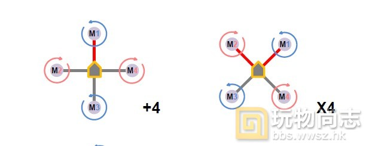
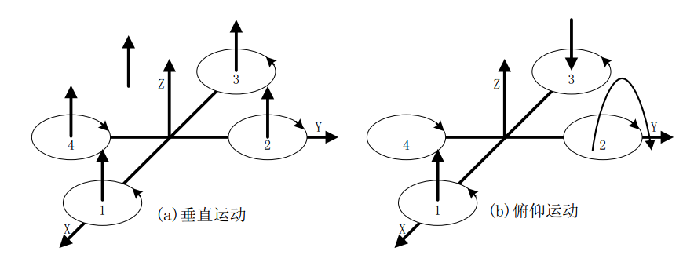
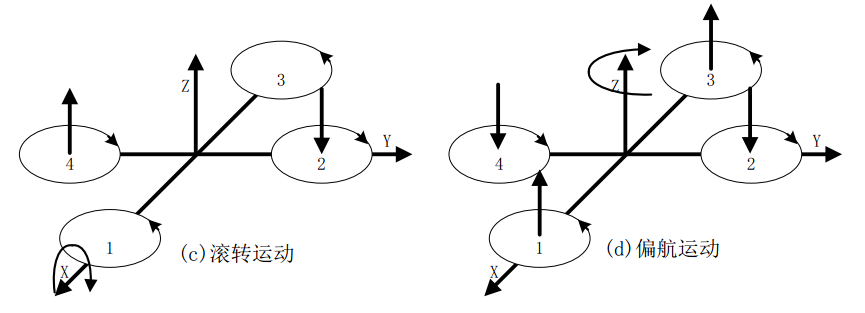
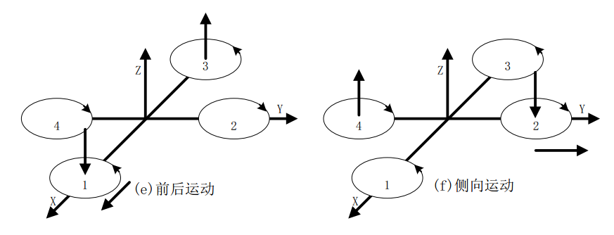

四軸飛行器四個電機呈十字形排列, 驅動四片槳旋轉產生向上的推力。四個電機軸距幾何中心的距離相等, 當對角兩個軸產生的升力相同時能夠保證力矩的平衡, 四軸不會向任何一個方向傾轉; 而四個電機一對正轉,一對反轉的方式使得繞豎直軸方向旋轉的反扭矩平衡, 保證了四軸航向的穩定。
與傳統的直升機相比，四旋翼飛行器有下列優勢：各個旋翼對機身所施加的反扭矩與旋翼的旋轉方向相反，因此當電機1和電機3逆時針旋轉的同時，電機2和電機4順時針旋轉，可以平衡旋翼對機身的反扭矩。
根據用戶自定義的機頭的位置不同，四軸飛行器可以分為x模式和+模式。x模式的機頭方向位於兩個電機之間，而+模式的機頭方向位於某一個電機上。x和+就是表示正對機頭方向時飛行器的形狀。如下圖所示。x模式要難飛一點，但動作更靈活。+模式要好飛一點，動作靈活差一點，所以適合初學者。特別注意，x模式和+模式的飛控安裝是不同的。如果飛控板安裝錯誤，會劇烈的晃動，根本無法飛。
crazepony使用的是x模式。

四旋翼飛行器在空間共有6個自由度（分別沿3個座標軸作平移和旋轉動作），這6個自由度的控制都可以通過調節不同電機的轉速來實現。基本運動狀態分別是：
在圖中，電機1和電機3作逆時針旋轉，電機2和電機4作順時針旋轉，規定沿x軸正方向運動稱為向前運動，箭頭在旋翼的運動平面上方表示此電機轉速提高，在下方表示此電機轉速下降。
垂直運動：垂直運動相對來說比較容易。在圖中，因有兩對電機轉向相反，可以平衡其對機身的反扭矩，當同時增加四個電機的輸出功率，旋翼轉速增加使得總的拉力增大，當總拉力足以克服整機的重量時，四旋翼飛行器便離地垂直上升；反之，同時減小四個電機的輸出功率，四旋翼飛行器則垂直下降，直至平衡落地，實現了沿z軸的垂直運動。當外界擾動量為零時，在旋翼產生的升力等於飛行器的自重時，飛行器便保持懸停狀態。保證四個旋翼轉速同步增加或減小是垂直運動的關鍵。
俯仰運動：在圖（b）中，電機1的轉速上升，電機3的轉速下降，電機2、電機4的轉速保持不變。為了不因為旋翼轉速的改變引起四旋翼飛行器整體扭矩及總拉力改變，旋翼1與旋翼3轉速該變量的大小應相等。由於旋翼1的升力上升，旋翼3的升力下降，產生的不平衡力矩使機身繞y軸旋轉（方向如圖所示），同理，當電機1的轉速下降，電機3的轉速上升，機身便繞y軸向另一個方向旋轉，實現飛行器的俯仰運動。

滾轉運動：與圖b的原理相同，在圖c中，改變電機2和電機4的轉速，保持電機1和電機3的轉速不變，則可使機身繞x軸旋轉（正向和反向），實現飛行器的滾轉運動。
偏航運動：四旋翼飛行器偏航運動可以藉助旋翼產生的反扭矩來實現。旋翼轉動過程中由於空氣阻力作用會形成與轉動方向相反的反扭矩，為了克服反扭矩影響，可使四個旋翼中的兩個正轉，兩個反轉，且對角線上的各個旋翼轉動方向相同。反扭矩的大小與旋翼轉速有關，當四個電機轉速相同時，四個旋翼產生的反扭矩相互平衡，四旋翼飛行器不發生轉動；當四個電機轉速不完全相同時，不平衡的反扭矩會引起四旋翼飛行器轉動。在圖d中，當電機1和電機3的轉速上升，電機2和電機4的轉速下降時，旋翼1和旋翼3對機身的反扭矩大於旋翼2和旋翼4對機身的反扭矩，機身便在富餘反扭矩的作用下繞z軸轉動，實現飛行器的偏航運動，轉向與電機1、電機3的轉向相反。

前後運動：要想實現飛行器在水平面內前後、左右的運動，必須在水平面內對飛行器施加一定的力。在圖e中，增加電機3轉速，使拉力增大，相應減小電機1轉速，使拉力減小，同時保持其它兩個電機轉速不變，反扭矩仍然要保持平衡。按圖b的理論，飛行器首先發生一定程度的傾斜，從而使旋翼拉力產生水平分量，因此可以實現飛行器的前飛運動。向後飛行與向前飛行正好相反。當然在圖b圖c中，飛行器在產生俯仰、翻滾運動的同時也會產生沿x、y軸的水平運動。
傾向運動：在圖f中，由於結構對稱，所以傾向飛行的工作原理與前後運動完全一樣。

總得來說就是控制四個電機的速度了。然後相應的提高速度和減慢速度就可以讓四軸動起來了。
麻省理工學院公開課：飛行器構造工程，來自網易公開課。講師Prof. Jeffrey Hoffman,Prof. Aaron Cohen，教授，曾供職於美國國家航空航天局（NASA）。